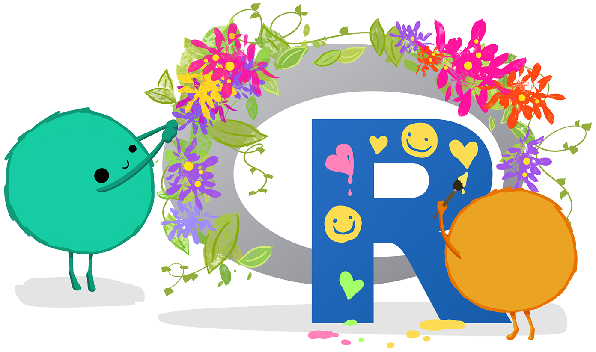
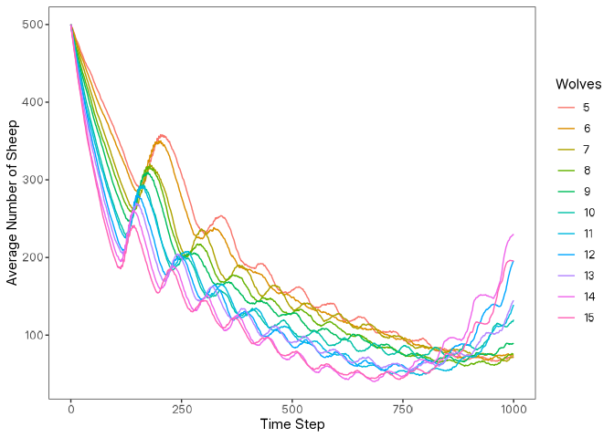
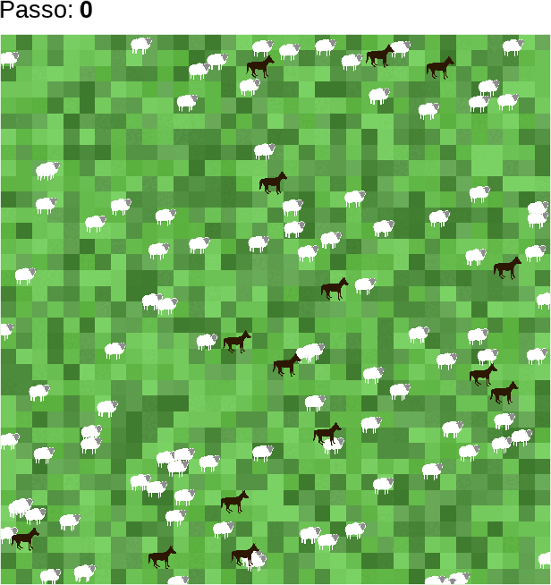
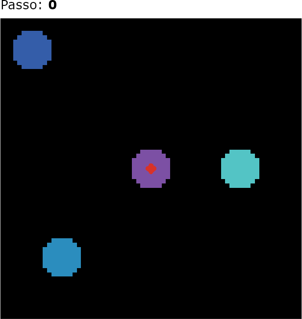

logolink
NetLogo
no R
Daniel Vartanian
29 de maio de 2026
Oiê! 👋
Esta apresentação tem como objetivo apresentar o logolink, uma interface para execução de simulações NetLogo a partir do R.

Tópicos a serem abordados:
- R & NetLogo
- Mas Já Não Tem?
- Reprodutibilidade
- O Pacote
- Funções Principais
- Exemplo de Uso
- NetLogo &
ggplot2
(Arte de Allison Horst)
(Animação de Allison Horst)

(Reprodução de Vartanian et al. (2026))
Mas Já Não Tem?

(Reprodução de Miske et al., 2026)
Facilmente integrado a HPCs, workflows (LogoActions), pipelines e notebooks.
create_experiment(
name = "",
repetitions = 1,
sequential_run_order = TRUE,
run_metrics_every_step = FALSE,
time_limit = 1,
pre_experiment = NULL,
setup = "setup",
go = "go",
post_run = NULL,
post_experiment = NULL,
exit_condition = NULL,
run_metrics_condition = NULL,
metrics = "count turtles",
constants = NULL,
sub_experiments = NULL,
file = tempfile(pattern = "experiment-", fileext = ".xml")
)O logolink detecta automaticamente sua instalação do NetLogo.
setup_file <- create_experiment(
name = "Wolf Sheep Simple Model Analysis",
repetitions = 10,
run_metrics_every_step = TRUE,
setup = "setup",
go = "go",
time_limit = 1000,
metrics = c(
'count wolves',
'count sheep'
),
constants = list(
"number-of-sheep" = 500,
"number-of-wolves" = list(
first = 5,
step = 1,
last = 15
),
"movement-cost" = 0.5,
"grass-regrowth-rate" = 0.3,
"energy-gain-from-grass" = 2,
"energy-gain-from-sheep" = 5
)
)results |> glimpse()
#> List of 2
#> $ metadata:List of 6
#> ..$ timestamp : POSIXct[1:1], format: "2026-02-11 12:46:59"
#> ..$ netlogo_version : chr "7.0.3"
#> ..$ output_version : chr "2.0"
#> ..$ model_file : chr "Wolf Sheep Simple 5.nlogox"
#> ..$ experiment_name : chr "Wolf Sheep Simple Model Analysis"
#> ..$ world_dimensions: Named int [1:4] -17 17 -17 17
#> .. ..- attr(*, "names")= chr [1:4] "min-pxcor" "max-pxcor" "min-pycor" "max-pycor"
#> $ table : tibble [110,110 × 10] (S3: tbl_df/tbl/data.frame)
#> ..$ run_number : num [1:110110] 1 1 1 1 1 1 1 1 1 1 ...
#> ..$ number_of_sheep : num [1:110110] 500 500 500 500 500 500 500 500 500 500 ...
#> ..$ number_of_wolves : num [1:110110] 5 5 5 5 5 5 5 5 5 5 ...
#> ..$ movement_cost : num [1:110110] 0.5 0.5 0.5 0.5 0.5 0.5 0.5 0.5 0.5 0.5 ...
#> ..$ grass_regrowth_rate : num [1:110110] 0.3 0.3 0.3 0.3 0.3 0.3 0.3 0.3 0.3 0.3 ...
#> ..$ energy_gain_from_grass: num [1:110110] 2 2 2 2 2 2 2 2 2 2 ...
#> ..$ energy_gain_from_sheep: num [1:110110] 5 5 5 5 5 5 5 5 5 5 ...
#> ..$ step : num [1:110110] 0 1 2 3 4 5 6 7 8 9 ...
#> ..$ count_wolves : num [1:110110] 5 5 5 5 5 5 5 5 5 5 ...
#> ..$ count_sheep : num [1:110110] 500 498 497 495 493 492 488 487 486 483 ...


Considerações Finais
Esta apresentação foi criada com o sistema de publicação Quarto. O código e os materiais estão disponíveis no GitHub.

(Arte de Allison Horst)
Referências
De acordo com o estilo da American Psychological Association (APA), 7. edição.
Miske, O., Abatayo, A. L., Daley, M., Dirzo, M., Fox, N., Haber, N., Hahn, K. M., Struhl, M. K., Mawhinney, B., Silverstein, P., Stankov, T., Tyner, A. H., Adamkovič, M., Alzahawi, S., Anafinova, S., Awtrey, E., Axxe, E., Bailey, J., Bakker, B. N., … Errington, T. M. (2026). Investigating the reproducibility of the social and behavioural sciences. Nature, 652(8108), 126–134. https://doi.org/10.1038/s41586-026-10203-5
Vartanian, D., Garcia, L., & Carvalho, A. M. (2026). LogoClim: WorldClim in NetLogo [Programa de computador]. CoMSES Network. https://www.comses.net/codebases/bccd451f-76a4-408a-85fd-c5024359ba9a
Obrigado!

(Arte de Allison Horst)